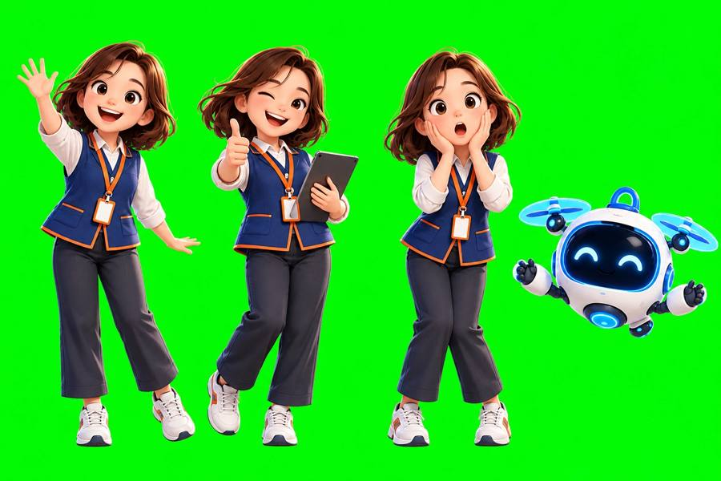
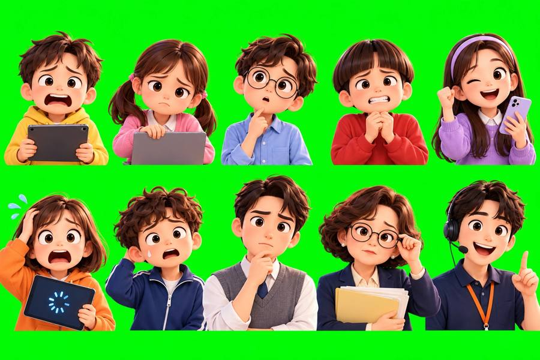
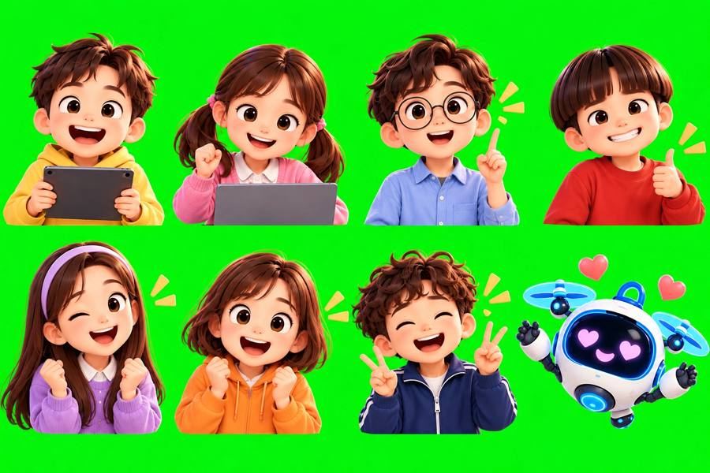
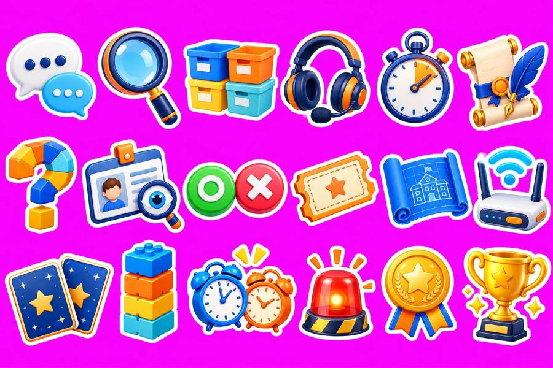
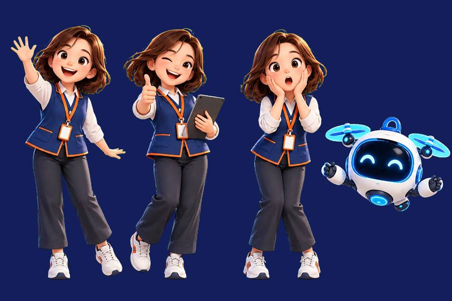
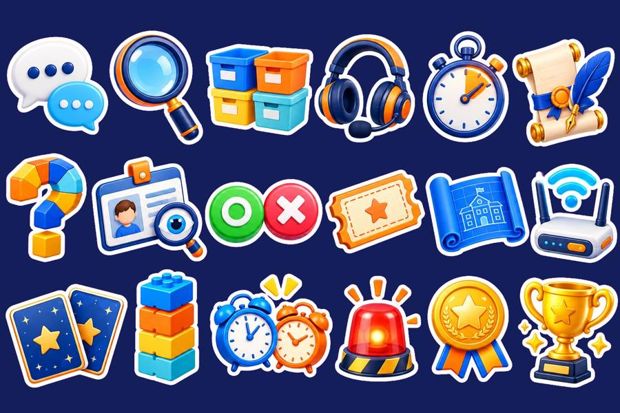

STEP 1 · RUN강의에서 이렇게 써요
설치·로그인 없이 링크 하나로 열려요. 연수생 기록은 각자 브라우저(localStorage)에만 저장되고 서버로 보내지 않아요.
1. 입장
지도 화면 아래 강사 메뉴 · 참여 QR → 오늘 쓸 패들렛 주소를 넣고 QR 만들기 → 화면에 띄우기. 연수생은 이름·조를 고르고 출동!
지도 화면 아래 강사 메뉴 · 참여 QR → 오늘 쓸 패들렛 주소를 넣고 QR 만들기 → 화면에 띄우기. 연수생은 이름·조를 고르고 출동!
2. 슬라이드 ↔ 미션
캔바 슬라이드의 MISSION 카드가 나오면 해당 구역의 미션을 3~8분 진행해요. 구역에 처음 들어가면 SOS 브리핑이 떠서 오늘 만날 학생·선생님을 소개해요.
캔바 슬라이드의 MISSION 카드가 나오면 해당 구역의 미션을 3~8분 진행해요. 구역에 처음 들어가면 SOS 브리핑이 떠서 오늘 만날 학생·선생님을 소개해요.
3. 공유
미션 결과 화면의 공유 글 복사 → 패들렛에 붙여 넣기. 공유 광장에서 내 산출물을 다시 모아 복사할 수 있어요.
미션 결과 화면의 공유 글 복사 → 패들렛에 붙여 넣기. 공유 광장에서 내 산출물을 다시 모아 복사할 수 있어요.
4. 마무리
21개 도장을 모으면 수료 무대에서 수료증 그림을 저장해요. 시연할 때는 강사 코드(config.js의 teacherCode, 기본 2026)로 도장을 모두 찍을 수 있어요.
21개 도장을 모으면 수료 무대에서 수료증 그림을 저장해요. 시연할 때는 강사 코드(config.js의 teacherCode, 기본 2026)로 도장을 모두 찍을 수 있어요.
같은 기기·같은 브라우저로 다음 차시에 들어오면 도장이 그대로 남아 있어요. 다른 기기로 바꾸면 처음부터예요.
STEP 2 · MISSIONS차시별 미션 21개
교안의 흐름 그대로 미션을 배치했어요. 롤플레이는 세 갈래 선택지 대화 — 좋은 대응이면 게이지가 오르고 학생 표정이 밝아져요.
| 구역 | 미션 | 교안 연결 |
|---|
STEP 4 · ART그림은 한 대화방에서 이어서
그림 10장을 한 대화방에서 이어서 만들어 화풍과 캐릭터를 맞췄어요. 첫 키아트에 스타일을 자세히 쓰고, 다음부터는 “같은 그림체로”라고만 했어요. 오려 쓸 그림은 단색 초록(#00FF00)이나 마젠타(#FF00FF) 배경으로 받았어요.




STEP 5 · CUT OUT배경 지우고 한 장씩 자르기
단색 배경을 투명하게 지우고(크로마키), 덩어리마다 잘라 webp로 저장했어요. 쓴 코드는 chroma_key.py예요. 코드 없이 하려면 캔바 배경 제거나 이미지 편집 도구의 배경 제거를 써도 돼요.


STEP 6 · GITHUB PAGES링크 하나로 배포하기
- github.com → 오른쪽 위 ＋ → New repository → 이름
tutor-rescue→ Public → Create. - Add file → Upload files → 이 폴더 안의 파일·폴더를 모두 끌어다 놓기 → Commit changes.
- Settings → Pages → Branch:
main/(root)→ Save. 1~2분 뒤https://아이디.github.io/tutor-rescue/주소가 생겨요. - 내용을 고치려면 GitHub에서 파일을 열고 연필 아이콘 → 수정 → Commit. 학습 내용은
js/data.js, 강사 설정은config.js에 모여 있어요.
| 경로 | 내용 |
|---|---|
| index.html | 타이틀 · 스마트스쿨 지도 · 구역 · 공유 광장 · 수료 무대 |
| config.js | 패들렛 주소, 에듀원 주소, 강사 코드, 수료증 연수 이름 |
| js/data.js | 교안 기반 미션·퀴즈·롤플레이 대사 데이터 |
| js/games.js, js/persona.js | 미션 17종 화면, 선택지 롤플레이 |
| js/world-data.js, js/screens.js | 지도 위치, 그림 연결, 화면 전환, 수료증 |
| assets/ | 그림 (배경·캐릭터·인물·아이콘) |